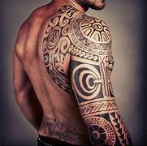
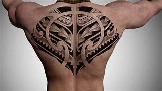

Los Maories son un pueblo indígena originario de Nueva Zelanda. Una de las características principales de su cultura, es una forma de arte corporal denominada Moko, que es lo que conocemos coloquialmente como Tatuaje Maori. Debido a las características de estos tatuajes, es prácticamente imposible la existencia de dos tatuajes iguales. Los diseños maories suelen ser muy complejos, utilizando formas curvas y patrones en espiral, mezclados con otros elementos. Siempre tienen un altísimo grado de detalle ya que no sólo muestran la grandeza del artista sino que representan a la cultura maori en sí misma.
Los artistas Maories reciben el nombre de “tohunga ta moko”, que significa especialista en moko. Estos tatuadores son muy respetados en sus comunidades y considerados “tapu” que tiene un significado de sagrado. Normalmente eran en su mayoría hombres, pero no exclusivamente. Una de las cosas que debes tener en cuenta al obtener tus propios tatuajes maoríes es que la combinación de estos pequeños símbolos cuenta una historia específica, no querrás elegir aleatoriamente sin saber cual sera el significado de tu combinación.